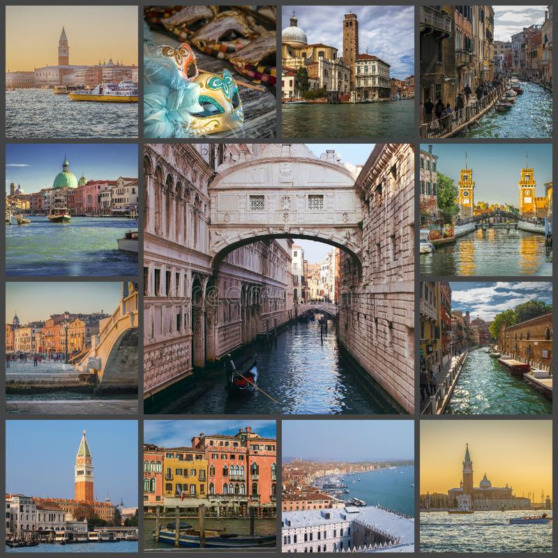

Venezia

Венеция — самый романтичный уголок Европы, расположенный на северном побережье Адриатического моря в Италии. Величественная архитектура, неповторимая атмосфера свободы и легкости, оживленные лабиринты улиц – все это создает уникальный ансамбль, который обязательно нужно увидеть, услышать, ощутить. Большая часть «города на воде» расположена на островах в Венецианской лагуне, которые соединены между собой огромным количеством мостов. Весь исторический центр Венеции включен в список культурного наследия ЮНЕСКО, и это неудивительно, ведь здесь сохранились образцы архитектуры
XIV–XVI веков. Свое название Венеция получила от наименования группы племен, которые в древности населяли эту территорию. Венеты с течением времени ассимилировали, и сейчас их потомков можно увидеть на здешних улицах. Из романов, повестей и анекдотов, по фотографиям, картинам и фильмам мы уже имеем свое представление о Венеции: это звезда среди других городов мира, сверкающая ни с чем не сравнимым блеском. Кажется, здесь все уже было тысячекратно сфотографировано и описано, – и тем не менее этот город по-прежнему сражает наповал: несмотря на толпы туристов, Венеция предстает перед нами такой же прекрасной, какой мы ее себе воображали. «Жемчужине Адриатики», городу на лагуне, более тысячи лет. Песчаные отмели всегда спасали ее от ярости Адриатического моря, которому, впрочем, неоднократно удавалось прорваться к городу. Он вдохновлял многие поколения артистов, художников и поэтов. Около ста шестидесяти церквей и многочисленные
дворцы говорят об особом месте, занимаемом Венецией в мире: как морской державы, торгового города и столицы искусств. Сегодня город — архитектурный музей под открытым небом. Международные биеннале современного искусства, кино- и музыкальные фестивали, драматические и оперные театры, в том числе вновь открытый театр Ла Фениче, постоянно
поддерживают на высоте выдающиеся культурные достижения Венеции. Старый город несет на себе отпечаток прошлых веков. Старинная архитектура, спокойствие каналов, толпы людей, которые всегда присутствуют в торговых городах – все это переносит отдыхающих на несколько столетий назад. О том, что на дворе XXI век, напоминают только современные вывески и гаджеты в руках прохожих.
← На главную